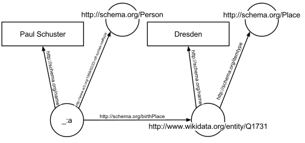
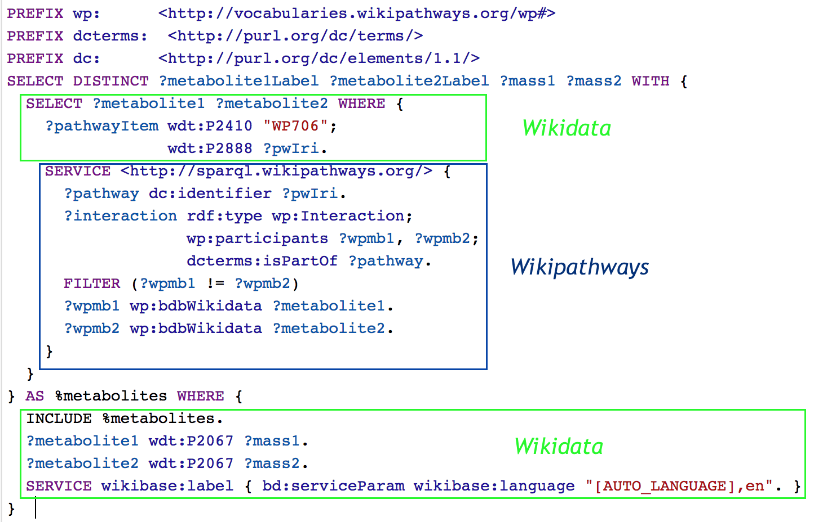
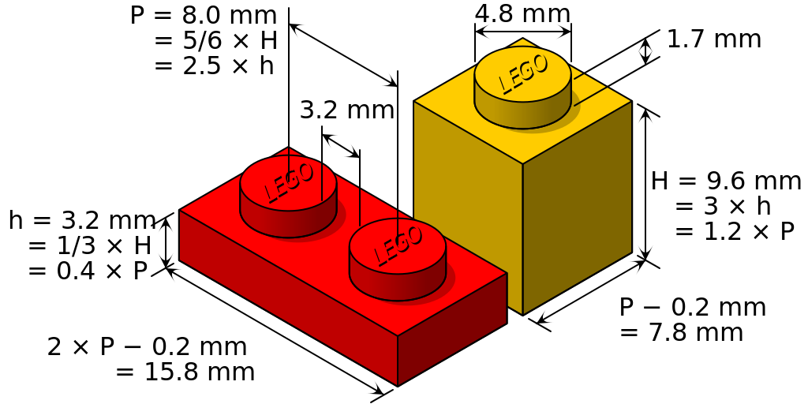
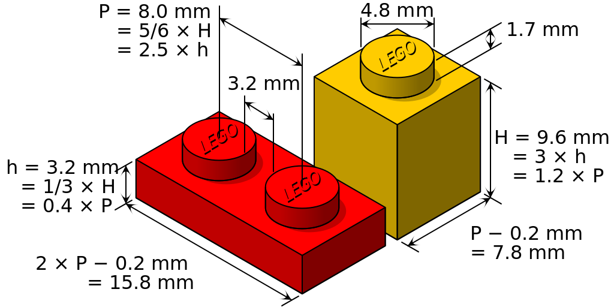

whoami?
James Pitts
http://twitter.com/jamiepitts
A former big fan of the Semantic Web (now just so-so).
What is Metadata?
"A set of data that describes and gives information
about other data." - Google Infobox
The Semantic Web of the 00s
Proposed by Tim Berners Lee, creator of the Web
"web of content" → "web of data" + "web of trust"
→ "web of meaning"
A major initiative at the W3C.
After 15 years: lots of intricate standards and tools.
After 15 years: lots of intricate standards and tools.
The Semantic Web of the 00s
The basic idea:- Establish ontologies about things.
- Metadata about all the things, all linked together.
- The web becomes a giant graph database.

The Semantic Web of the 00s
Interesting outcome: SPARQLQuery all the things that are linked together!

Conundrum of web metadata:
Loosely-declared metadata can lead to ambiguity
but structuring and describing metadata can be burdensome.
The SemWeb Did Not "Go Big"
Original vision was not widely adopted.
More standards produced than useful systems for users.
e.g. RDFa, RDF Schema, OWL (for ontologies)
More standards produced than useful systems for users.
e.g. RDFa, RDF Schema, OWL (for ontologies)
"Metacrap"
Insurmountable obstacles:
...lies, laziness, stupidity, impracticality...
...lies, laziness, stupidity, impracticality...
Yet metadata is widespread
Using metadata
(perhaps without knowing it)
Email actions in microdata:
|
Aggregated for search results:
|
What does SemWeb-standard metadata provide?
- Data that can refer to other data (linkage)
- Data that software can denote (descriptive meaning)
- Data that can be reasoned about (structural meaning)
What does this lead to?
- Rich options for publishing data
- Data can be more easily and cheaply aggregated
- A "value chain" of data
- New services
How does metadata do this?
- Highly formalized assertions
- Layered on top of Web content
- Aggregators deal with mixed expressions
Semantic Pizza
A look at some Semantic Web standards"pizza ontology"
https://protege.stanford.edu/ontologies/pizza/pizza.owl

Linkage
Clarity requires unambiguous references to resources
that are always there.
Linkage - Standards
- RFC 3986 URI
- XML Namespaces
<rdf:RDF
xmlns="http://www.co-ode.org/ontologies/pizza/pizza.owl#"
xmlns:pizza="http://www.co-ode.org/ontologies/pizza/pizza.owl#"
xmlns:rdf="http://www.w3.org/1999/02/22-rdf-syntax-ns#"
xmlns:rdfs="http://www.w3.org/2000/01/rdf-schema#"
xmlns:terms="http://purl.org/dc/terms/"
xmlns:owl="http://www.w3.org/2002/07/owl#"
xmlns:xsd="http://www.w3.org/2001/XMLSchema#"
xmlns:skos="http://www.w3.org/2004/02/skos/core#"
xmlns:dc="http://purl.org/dc/elements/1.1/"
xml:base="http://www.co-ode.org/ontologies/pizza/pizza.owl">
...
...
<dc:title xml:lang="en">pizza</dc:title>
<terms:contributor>Nick Drummond</terms:contributor>
<terms:license rdf:datatype="http://www.w3.org/2001/XMLSchema#string">Creative Commons Attribution 3.0 (CC BY 3.0)</terms:license>
<rdfs:label rdf:datatype="http://www.w3.org/2001/XMLSchema#string">pizza</rdfs:label>
...
Descriptive Meaning
Denote assertions in data with types and properties.
-
Assertion about Los Angeles:
'Los Angeles' | is a type of | https://schema.org/City -
Ontological assertion about pizza:
'topping' | is a functional property and ingredient of | 'pizza'
Descriptive Meaning - Standards
- RDF Schema "Type"
- OWL "Object Property"
<!--
http://www.co-ode.org/ontologies/pizza/pizza.owl#isToppingOf
-->
<owl:ObjectProperty
rdf:about="http://www.co-ode.org/ontologies/pizza/pizza.owl#isToppingOf">
<rdfs:subPropertyOf
rdf:resource="http://www.co-ode.org/ontologies/pizza/pizza.owl#isIngredientOf"/>
<rdf:type rdf:resource="http://www.w3.org/2002/07/owl#FunctionalProperty"/>
</owl:ObjectProperty>
Structural Meaning
To be able to reason about data, specify the relations among types.
Transitive Property of ingredients:
"the ingredients of ingredients are ingredients of the whole"
"the ingredients of ingredients are ingredients of the whole"
Structural Meaning - Standards
- W3C RDF Schema: "Type"
- W3C OWL: "Transitive Property"
<!--
http://www.co-ode.org/ontologies/pizza/pizza.owl#hasIngredient
-->
<owl:ObjectProperty
rdf:about="http://www.co-ode.org/ontologies/pizza/pizza.owl#hasIngredient">
<owl:inverseOf
rdf:resource="http://www.co-ode.org/ontologies/pizza/pizza.owl#isIngredientOf"/>
<rdf:type rdf:resource="http://www.w3.org/2002/07/owl#TransitiveProperty"/>
<rdfs:domain rdf:resource="http://www.co-ode.org/ontologies/pizza/pizza.owl#Food"/>
<rdfs:range rdf:resource="http://www.co-ode.org/ontologies/pizza/pizza.owl#Food"/>
</owl:ObjectProperty>
Reasoning w/ Transitive Property
Is the ketchup on the hot dogs an ingredient of the pizza?
Photo by Stephanie Karlik
Reasoning w/ Transitive Property
Is the ketchup on the hot dogs an ingredient of the pizza?
- Mini hot dog is an ingredient of pizza.
- Ketchup is an ingredient of mini hot dog.
- Therefore, the ketchup is an ingredient of the pizza.
Developers are not going to do this work
without major incentives!
"Ease of understanding has been sacrificed at the altar of pedantic technical accuracy..."
- Manu Sporny
JSON-LD and Why I Hate the Semantic Web

|
Manu Sporny
Semantic Web anti-hero, founder of Digital Bazaar- Developed JSON-LD standard
(https://json-ld.org) - Add context to data with less effort
- Example: "Event" as JSON-LD
{
"@context": {
"ical": "http://www.w3.org/2002/12/cal/ical#",
"xsd": "http://www.w3.org/2001/XMLSchema#",
"ical:dtstart": {
"@type": "xsd:dateTime"
}
},
"ical:summary": "Devcon3",
"ical:location": "Cancún, Quintana Roo, Mexico",
"ical:dtstart": "2017-11-01T13:00:00Z"
}
Semantic Ethereum
How much linking, describing, and structuring
for our decentralized application data?
Possibly:
- Optimize for creative extension
- Reasonable composability (JSON-LD)
 

Ethereum already has metadata
- Linkage:
addresses, signatures,
ERC-20 balance address, ERC-735 Claim URI - Descriptive:
ABIs, ERCs, documentation - Structural:
enforced in the EVM
enforced by Dapps
Why use metadata in the Ethereum ecosystem?
Contracts, content, and data are potentially forever
Reduce effort, cooperate with other dapp teams
Footholds for expanding the ecosystem
What we can do in Swarm
A permanent (but light) web of meaning- Stop re-inventing "person", "address", and so on
- Help create Ethereum's http://schema.org
- In Ethereum contracts, link to JSON-LD hosted on Swarm
(and vice versa)
Remember
- Only enough structure for creativity
- Build things that can be built on top of
- Use the useful stuff from the W3C:
general concepts, XML Namespaces, JSON-LD

James Pitts
http://twitter.com/jamiepitts
This presentation was built with reveal.js https://github.com/hakimel/reveal.js